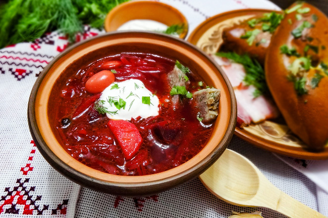

Супы
Марокканский суп с фрикадельками кус-кусом и шпинатом
Очень простой марокканский суп с фрикадельками, шпинатом и кус-кусом. Готовится быстро, очень ароматный, сытный и легкий одновременно (рецепт).
Крумплилевеш (Krumplileves) — Венгерский картофельный суп с колбасой
Венгерский картофельный суп с колбасой (венг. Krumplileves) — это очень простой крестьянский крестьянский суп, сытный и вкусный, который стал по-настоящему знаменитым в Венгрии. Подавайте его с кусочками хрустящего хлеба и наслаждайтесь кремовой текстурой, в которой смешались запах паприки и дымный аромат колбасы.Готовится крумплилевеш очень быстро, труда и внимания особо не требует, а ингредиенты для него самые простые и. обычно, всегда бывают на любой кухне.Иногда такой суп готовится и без мясной составляющей, иногда в него вместо колбасы добавляют нарезанные кусками купаты — тут все на ваш выбор (рецепт).
Черниговский борщ
Черниговский борщ — очень интересный рецепт борща, в котором присутствуют ингредиенты, нечасто встречающиеся в каких-либо супах, а уж тем более в борщах, такие как яблоки и кабачки, а иногда и баклажаны. Блюдо получается очень насыщенное, сытное и вкусное, так что его точно стоит приготовить. В качестве мясной составляющей используется или говядина, или свинина. Но мясо обязательно должно быть с косточкой (рецепт).